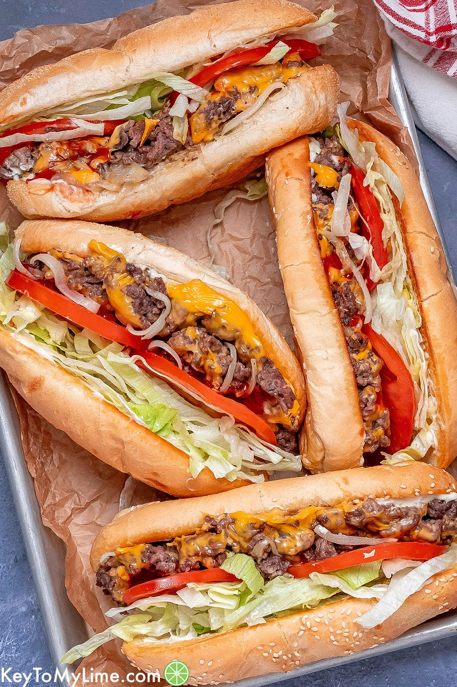

Chopped Cheese Sandwich

Description
This is literally the easiest and tastiest sandwich. This NYC-style chopped cheese sandwich is sort of a burger, sort of a sandwich, and 100% mouthwatering and delicious. This sandwich is a classic NY delicacy that originated in bodegas in the Bronx and Harlem.
The beef is seasoned and cooked perfectly, the creamy American cheese melts onto every chunk of beef, the sauteed onions add the perfect texture and flavor, the crisp lettuce and juicy tomatoes add freshness, and the creamy tangy combination of mayo and ketchup just take the flavors to the next level in the soft, toasted hero roll.
Ingredients
- Hoagie Rolls
- Butter
- Yellow Onion
- Ground Chuck Beef, if possible make it 80/20
- Salt, Black Pepper, and Garlic Powder
- American Cheese
- Iceberg Lettuce
- Beefsteak Tomato
- Ketchup and Mayo
Steps
- Spread butter on the rolls and toast them in a pan until golden brown. Set aside for later.
- Melt some butter in same pan and sautee chopped onions until translucent.
- Add the ground beef to same pan and season with the salt, pepper, and garlic powder, to taste.
- Chop ground beef into chunks with spatula and mix with onions. Cook until browned.
- Add american cheese on top of the ground beef until it fully covers it. Cover pan and wait for cheese to melt.
- Spread mayo on both sides of hoagie roll and add the beef to the bottom side.
- Top with lettuce, tomato, and ketuchup. Close roll and serve.
Main Page